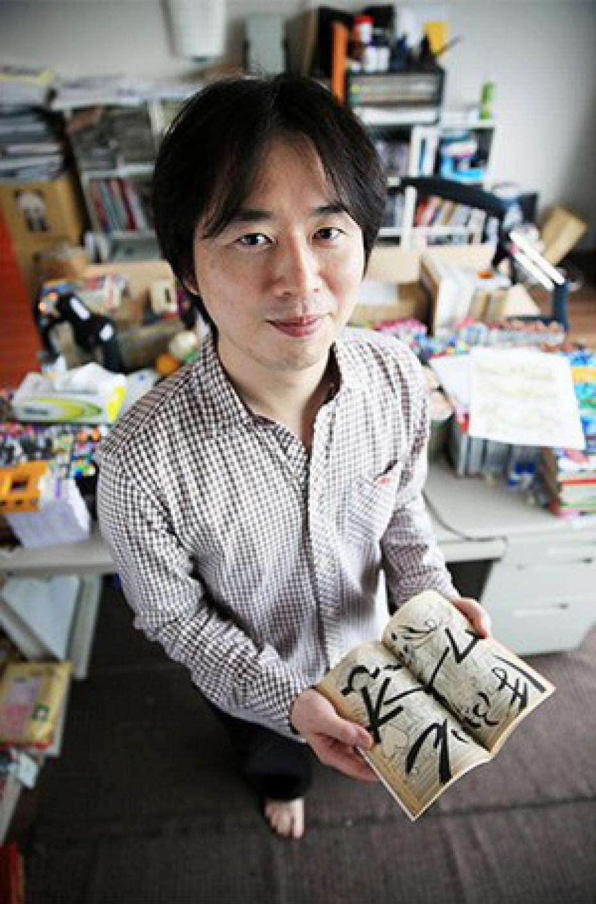

Naruto
La serie sigue las aventuras de Naruto Uzumaki, un joven ninja que busca reconocimiento y sueña con convertirse en el Hokage, el líder de su aldea.
Precio: €9.99
Naruto es un manga japonés escrito e ilustrado por Masashi Kishimoto. Se serializó en la revista Weekly Shonen Jump de Shueisha desde el 21 de septiembre de 1999 hasta el 10 de noviembre de 2014, con los capítulos individuales recopilados y publicados en volúmenes de tankobon por la misma editorial.
Información del Autor
Masashi Kishimoto es un mangaka japonés nacido el 8 de noviembre de 1974 en la prefectura de Okayama, Japón. Es más conocido por ser el creador del manga "Naruto", una de las series de manga y anime más populares de todos los tiempos.
Kishimoto se inspiró en su infancia en la cultura ninja y en diversas influencias culturales para crear la historia y los personajes de "Naruto". La serie ha sido aclamada tanto por su trama emocionante como por sus personajes memorables y ha dejado un impacto duradero en la cultura popular.
En resumen, Masashi Kishimoto es un mangaka talentoso cuyo trabajo ha entretenido y emocionado a millones de fans en todo el mundo con su obra maestra "Naruto". Su creatividad, dedicación y habilidad para contar historias lo han convertido en uno de los autores más respetados en la industria del manga y el anime.
Sagas Principales
| Saga | Descripción | Capítulos |
|---|---|---|
| Saga del País de las Olas | Naruto y su equipo son asignados para proteger a un constructor de puentes y enfrentarse a Zabuza Momochi y su aprendiz, Haku. | 1-19 |
| Saga del Exámen Chunin | Naruto y sus compañeros de equipo participan en el Exámen Chunin para demostrar su valía como ninjas de nivel medio. | 20-67 |
| Saga de la Invasión de Konoha | Orochimaru y sus secuaces atacan la Aldea Oculta de la Hoja durante los exámenes Chunin, desencadenando una batalla masiva. | 68-80 |
| Saga del Regreso de Itachi | Naruto y su equipo se enfrentan a Akatsuki y a los planes de Sasuke de vengarse de su hermano, Itachi Uchiha. | 81-135 |
| Saga de Naruto: Shippuden | Naruto regresa a Konoha después de entrenar durante dos años y medio y se enfrenta a nuevos desafíos y enemigos en su búsqueda para rescatar a Sasuke. | 136-220 |
| Saga de la Cuarta Guerra Mundial Shinobi | Naruto y sus aliados luchan contra Akatsuki y las fuerzas de la Cuarta Guerra Mundial Shinobi, lideradas por Obito Uchiha y Madara Uchiha. | 221-700 |